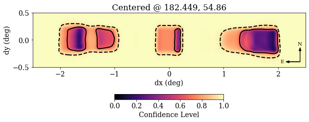
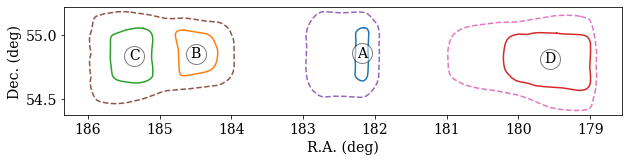

Make a Localization Plot
Author: Alex Josephy
Localizations are key to understanding FRBs and this tutorial will show you how to plot localizations from CHIME/FRB Catalog Data.
All of the code provided in this tutorial, is also availaible through the CHIME/FRB Open Data python package.
cfod
from cfod.routines import localizer
localize = localizer.Localize(filename=`FRB20180725A_localization.h5`)
localize.plot()
localize.countours()
Following Python packages are required complete this tutorial: h5py, numpy, healpy, and matplotlib.
Loading in localization data¶
The localization data are stored in an HDF5 format. We include various views of the underlying probability distribution, which should be useful for different situations (e.g. healpix maps, contours lists).
Example
# Load in packages
import h5py as h5
import numpy as np
import healpy as hp
import matplotlib.pyplot as plt
# Load in the HDF5 file.
f = h5.File('example.h5', 'r')
# The following function just summarizes the HDF5 file structure:
def describe(group, recurse=False):
""" Prints info on the contents of an hdf5 group """
print(group.name)
# First print header-like attributes (if exist)
if group.attrs:
print('\n attrs: {')
for key, value in group.attrs.items():
if key in ['comments', 'history']:
print(' %s:' % key)
for line in value:
print(' ' + str(line))
else:
print(' %s:' % key, value)
if group.attrs:
print(' }')
# Then print constituent groups & datasets
print()
for key, value in group.items():
if isinstance(value, h5.Group):
if recurse:
print('-'*60)
describe(value, True)
else:
print(' ' + key + '/')
else:
print(' ' + key + ':', value.shape, value.dtype)
print()
ROOT Attributes¶
The attributes at the root level include some basic parameters: TNS name, the positional values reported in the Catalog table, coordinate system details, and galactic coordinates for convenience.
ROOT
describe(f['/']) # See hint 1
f['healpix'].attrs['comments'] # See hints below
Hint
The output from the first line above should be:
attrs: {
tns_name: FRB20181224D
ra: 182.45
ra_hms: 12h09m48s
ra_error: 0.197
dec: 54.85
dec_dms: 54d51m00s
dec_error: 0.213
glon: 135.42455191200924
glat: 61.256833554798746
frame: ICRS
epoch: J2000
units: degrees
comments:
Reported errors are at the 68% CL.
R.A. errors have been scaled by cos(dec).
Regions reported here are for the mainlobe island.
See further data products for sidelobe islands.
}
healpix/
projection/
contours/
Hint
The output from the second line above should be:
array(['Sparse representation of a HEALPix map.',
'ipix := pixel indices (given nside and ordering scheme).',
'CL := confidence level. Any pixel with a CL less than',
'0.XX is within the XX% credible region.'], dtype=object)
HEALPix¶
A sparse representation of a HEALPix map, where pixels with effectively zero probability have been discarded (typically ~99.99% of the sky). The same resolution is used as the exposure maps (nside = 4096, giving a pixel area of ~0.7 square arcmins).
HEALPix
describe(f['/healpix'])
Hint
The output from the line above should be.
/healpix
attrs: {
nside: 4096
ordering: nested
comments:
Sparse representation of a HEALPix map.
ipix := pixel indices (given nside and ordering scheme).
CL := confidence level. Any pixel with a CL less than
0.XX is within the XX% credible region.
}
ipix: (174835,) int64
CL: (174835,) float32
Sampling the Localization Region¶
Example usage of HEALPix
nside = f['healpix'].attrs['nside']
ipix, CL = f['healpix/ipix'][()], f['healpix/CL'][()]
# example 1: get locations of pixels within 90% confidence bounds
# note that initializing the full healpix map is not necessary here
ra, dec = hp.pix2ang(nside, ipix[CL < 0.9], nest=True, lonlat=True)
# example 2: sampling pixels with weighting
sampled = np.random.choice(ipix, 30000, p=(1-CL)/(1-CL).sum())
ra, dec = hp.pix2ang(nside, sampled, nest=True, lonlat=True)
PROJECTION¶
A Gnomonic projection of the HEALPix map is included for convenient visualization. This projection method projects from the sphere onto a tangent plane, where the tangent point is centered on the target location. This is an appropriate choice given the ~degree scale of these uncertainty regions. The tangent plane that defines the projection is centered on the highest S/N beam.
PROJECTION
describe(f['/projection'])
Hint
/projection
attrs: {
clon: 182.44863891601562
clon_hms: 12h09m48s
clat: 54.858444213867195
clat_dms: 54d51m30s
reso: 0.5
xsize: 600
ysize: 120
comments:
Gnomonic projection of the HEALPix map,
centered around the beam with the highest S/N.
Made with healpy.projector.GnomonicProj
}
data: (120, 600) float32
Making a Localization Plot¶
Example
hdr = f['projection'].attrs
CL = f['projection/data'][:]
extent = np.array([-hdr['xsize']/2, hdr['xsize']/2,
-hdr['ysize']/2, hdr['ysize']/2])*hdr['reso']/60
plt.rc('font', family='serif', size=14)
plt.figure(figsize=(10, 4))
# Note: RA increases to the left!
im = plt.imshow(CL, vmin=0, origin='lower',
extent=extent, cmap='magma')
plt.contour(CL, levels=[0.68, 0.95], linestyles=['-', '--'],
colors='k', linewidths=2, extent=extent)
plt.colorbar(im, pad=0.25, shrink=0.4, orientation='horizontal',
label='Confidence Level')
plt.arrow(2.4, -0.4, 0, 0.2, head_width=0.04, color='k')
plt.text(2.39, -0.1, 'N', ha='center', size=10)
plt.arrow(2.4, -0.4, -0.2, 0., head_width=0.04, color='k')
plt.text(2.1, -0.4, 'E', va='center', ha='right', size=10)
plt.title('Centered @ %.3f, %.2f' % (hdr['clon'], hdr['clat']))
plt.xlabel('dx (deg)')
plt.ylabel('dy (deg)')
Your plot generated from the above script should look similar to this plot: 
Contours¶
Example
describe(f['/contours'], recurse=True)
Hint
The above example's output should look like the following:
/contours
attrs: {
comments:
(R.A., Dec.) contours of common confidence intervals.
Islands (labelled ABC...) are ordered with increasing R.A.
Contours are extracted from the Gnomonic projection,
and have been simplified using the Ramer-Douglas-Peucker
algorithm (with an epsilon parameter of 0.2 pixels).
}
------------------------------------------------------------
/contours/50
A: (2, 22) float32
B: (2, 30) float32
C: (2, 38) float32
------------------------------------------------------------
/contours/68
A: (2, 24) float32
B: (2, 28) float32
C: (2, 34) float32
D: (2, 43) float32
------------------------------------------------------------
/contours/90
A: (2, 34) float32
B: (2, 51) float32
C: (2, 46) float32
------------------------------------------------------------
/contours/95
A: (2, 41) float32
B: (2, 54) float32
C: (2, 48) float32
Making a Contour Plot¶¶
Example
# example 0: getting points
ra, dec = f['contours/68/A']
# example 2: plotting contours
plt.figure(figsize=(10,2))
for name, contour in f['contours/68'].items():
contour = contour[:]
plt.plot(*contour)
plt.plot(*contour.mean(1), 'wo', mec='k', ms=20, alpha=0.5)
plt.text(*contour.mean(1), s=name, ha='center', va='center')
for contour in f['contours/95'].values():
plt.plot(*contour[:], '--')
plt.xlim(*plt.xlim()[::-1])
plt.xlabel('R.A. (deg)')
plt.ylabel('Dec. (deg)')
Your plot generated from the above script should look similar to this plot: 